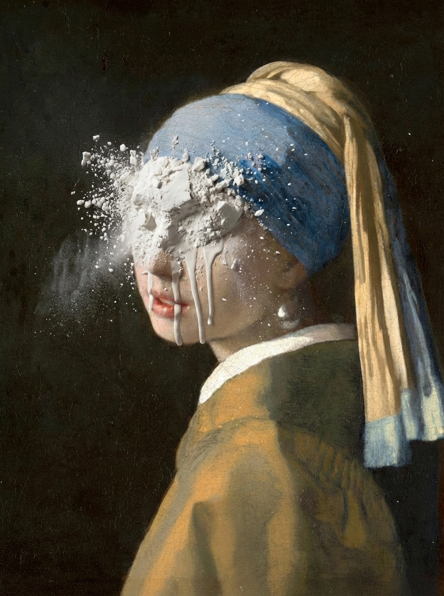
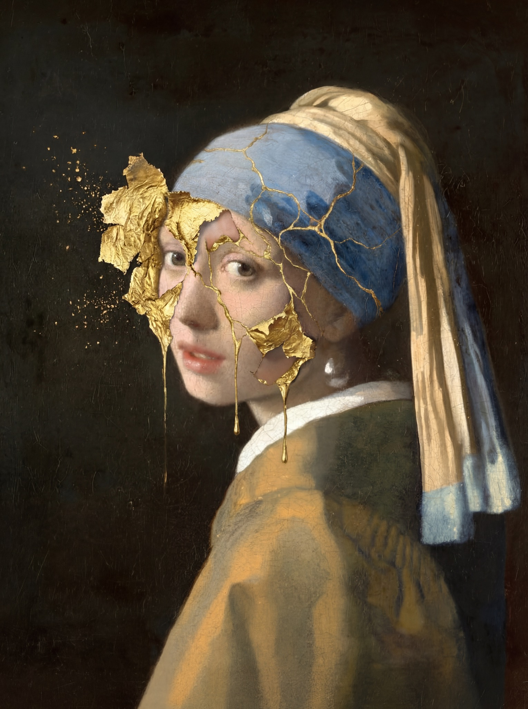
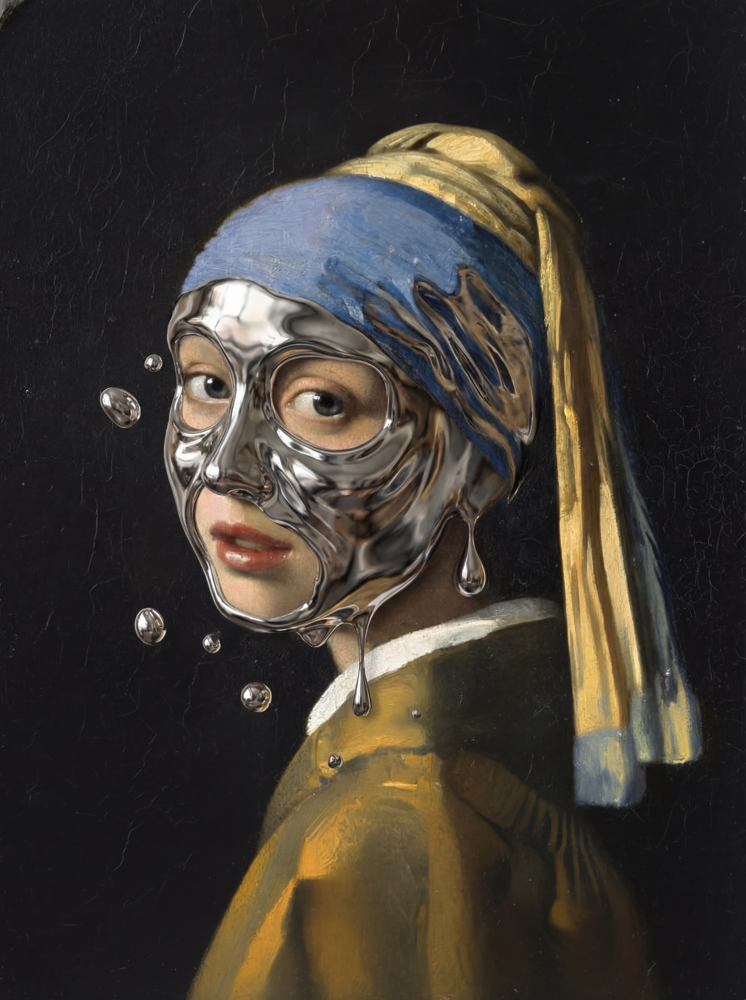
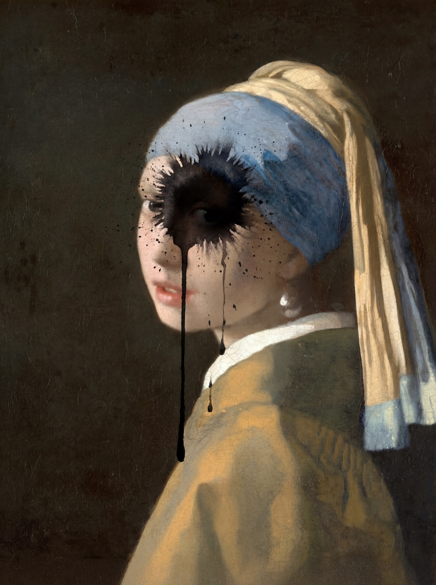
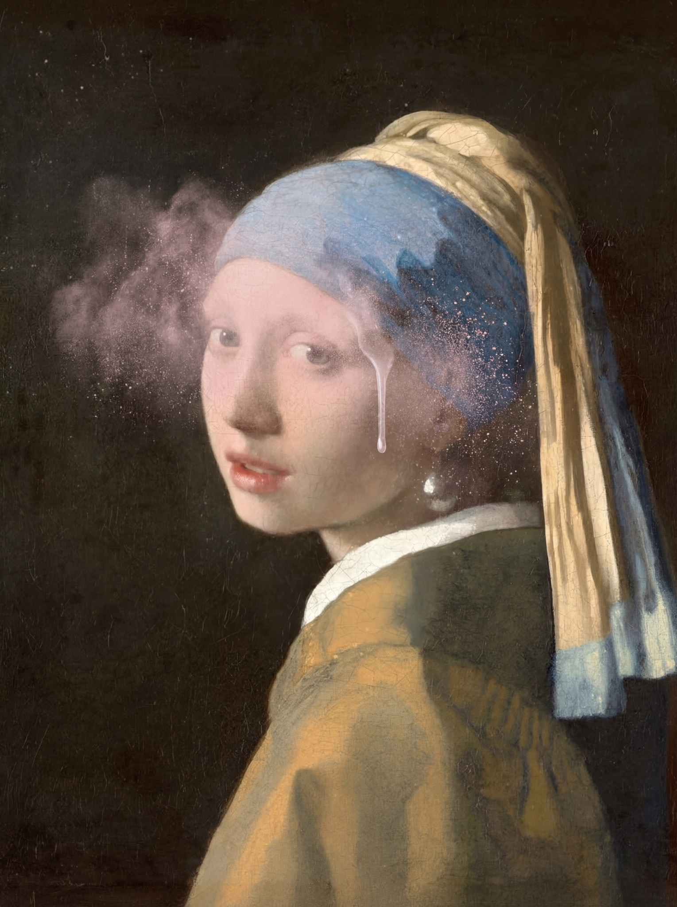
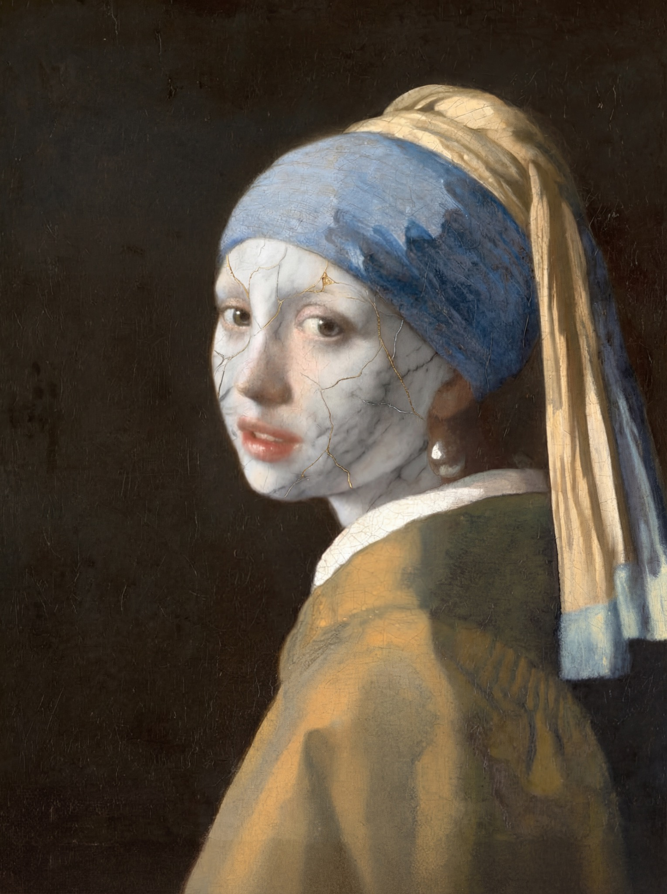
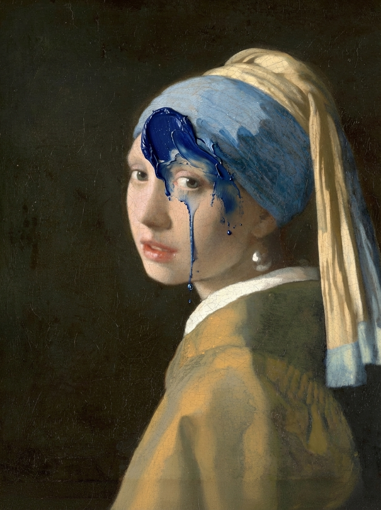

OEVER.ART collectie
Zeven herinterpretaties van Vermeer
Een mobile-first premium collectiepagina voor zeven moderne Vermeer-werken, ontworpen voor snelle ontdekking en directe kooproutes.

Curated selectie
De zeven werken
Elk werk staat in een strak blok, met een directe koopknop en consistente mobiele uitlijning op iPhone, Android, tablet en desktop.


Vloeibaar chroom
Een koele, spiegelende huidlaag met vallende druppels en futuristische glans.
Bekijk & koop
Zwarte inktinslag
Een harde, grafische impact van zwarte inkt die het gezicht deels uitwist.
Bekijk & koop


Blauwe verfstreek
Dikke ultramarijnverf stroomt over voorhoofd en oog voor een rauwe verstoring.
Bekijk & koopWaarom deze funnel werkt
Ontworpen voor mobiel, rustig op desktop
De header schaalt nu in drie delen, de hero blijft binnen frame en de koopflow blijft per schermbreedte leesbaar. De layout gebruikt een strakke 4px spacing en 8px rounding om op elk toestel consistent te voelen.
Brand motion
Line-art oor met parel
FAQ
Printinformatie
Op welke materialen zijn de werken beschikbaar?
De prints zijn beschikbaar via Werkaandemuur op materialen zoals canvas, fine art papier, aluminium, acrylglas en andere premium presentaties, afhankelijk van het gekozen werk en formaat.
Hoe zit het met afwerking en detail?
De gekozen presentaties zijn gericht op kleurvastheid, hoge detailweergave en een strakke afwerking. Hierdoor blijven contrast, textuur en diepte sterk overeind, ook bij grotere formaten.
Hoe verloopt levering en verpakking?
Bestellingen worden professioneel geproduceerd en verpakt voor veilig transport. De uiteindelijke levertijd hangt af van materiaal, formaat en afleveradres.